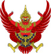
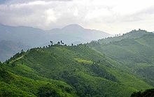

, що перекладається як «трикольоровий прапор» або «триколор».")
Таїланд (тай. ประเทศไทย), офіційна назва Королівство Таїланд (тай. ราชอาณาจักรไทย [râːtɕʰa ʔaːnaːtɕɑ̀k tʰɑj]), до 1939 року відомий як Сіам) — країна в Південно-Східній Азії, розташована на півостровах Індокитай і Малакка, межує на сході з Лаосом і Камбоджею, півдні з Малайзією, на заході з М'янмою (раніше Бірма). Загальна протяжність берегової лінії близько 2400 км. Південне узбережжя країни омивається Сіамською затокою, південно-західне — Андаманським морем.
Таїланд — королівство, яке з 12 жовтня 2016 очолює король Маха Вачхіралонгкон. Столиця держави, та її головний порт — місто Бангкок. Основне населення країни тайці, найбільша національна меншина — китайці, третя за величиною — малайці. Тайська мова є офіційною мовою держави. Грошова одиниця — бат.
Таїланд є членом ООН і входить в Асоціацію держав Південно-Східної Азії (АСЕАН) і Азійсько-Тихоокеанську економічну конференцію. З 1983 Таїланд — член Асоціації країн-виробників олова.Прапор Таїланду
Герб Таїланду
Археологічні знахідки свідчать про те, що люди поселилися на території Таїланду ще 40 тис. років тому. Відомості про перші держави на його території існують з 1 ст., однак ці держави охоплювали не тільки Таїланд, а й значну частину всього Індокитаю.
Перша велика тайська держава — Сукотаї — виникла в ХІІІ ст. після розпаду Кхмерської імперії. Спадкоємцем Сукотаї стало царство Аюттхая (Сіам), утворене в 1350. У XIX ст. Сіам уклав нерівноправні угоди з Великою Британією, Францією, США, однак ніколи не був колонією європейської держави. Англо-французька угода 1896 року визнала Сіам незалежною буферною державою. Конституційна монархія встановлена в 1932, назва країни Таїланд прийнята у 1939. Японія окупувала країну в 1941–45.
У проміжку між 1945 та 1949 роками держава знову називалася Сіам, сучасна офіційна назва — Таїланд, або Пратхеттхай («Земля вільних»). З 1946 до середини 1970-х років він був союзником США в період холодної війни і отримував американську військову допомогу. У роки війни у В'єтнамі на території Таїланду розміщувалися американські військові підрозділи.
Кінець XX ст. — початок XXI ст. відзначені в Таїланді низкою політичних криз. У 1997 році була ухвалена конституція, яку називали народною. Конституція встановила двопалатний парламент. Вибори 2001 року були вільними й демократичними, встановлений уряд уперше в історії Таїланду відслужив свій 4-річний термін.
Наступного, 2006 року, не зустрічаючи особливого опору, військова хунта вчинила переворот і скинула уряд Таксина Чинавата. Військовики скасували дію конституції, розпустили парламент та верховний суд і оголосили воєнний стан.
Протести прихильників Об'єднаного національного фронту за демократію проти диктатури, яких називають червоними сорочками, 10 квітня 2010 року призвели до насилля, в результаті якого загинули 87 людей, і понад тисяча отримали пошкодження. Вибори 2011 року виграла зі значною перевагою партія Пхиа Тхаї на чолі з молодшою сестрою Таксина Чинавата Їнглак Чиннават, яка виконує функції прем'єр-міністра станом на жовтень 2012 року.
Таїланд розташований в Південно-Східній Азії, на півостровах Індокитай і Малакка, із заходу омивається Андаманським морем, зі сходу Сіамською затокою Південно-Китайського моря. Територія Таїланду витягнута з півночі на південь (відстань від самої північної точки до найпівденнішої точки — 1860 км).
За особливостями рельєфу Таїланд прийнято поділяти на п'ять географічних районів: Північне нагір'я, Центральна рівнина, Північно-Східне плато, південний схід і півострівний Південний район. Найбільші річки — Менам-Чао-Прая (на Менамській рівнині), Меконг (на кордоні з Лаосом).
Клімат Таїланду — вологий тропічний на півночі країни, і субекваторіальний в центральній і південній частинах, а на кордоні з Малайзією — екваторіальний. Це пояснюється розташуванням більшої частини країни в тропічному і субекваторіальному поясах і впливом південно-західного і північно-східного мусонів. Відстань між крайньою північною і крайньому південному точками Таїланду — 1860 км, а перепад широт — близько 15°.
Тривалість сезону дощів визначити дуже важко. Зазвичай він починається в травні — червні і може тривати до листопада. У центрі країни і на східному узбережжі сильні дощі йдуть в серпні — вересні. Жовтень — зазвичай останній місяць вологого сезону, коли значні обсяги води вже накопичилися в іригаційних системах і міському дренажі, в результаті чого при нечастих і не дуже сильних дощах відбуваються досить сильні повені. Зокрема, коли річка Чаопхрая виходить з берегів, деякі квартали Бангкока бувають затоплені, близько третини міста знаходиться нижче рівня моря.
Таїланд — аграрно-промислова країна. Місцева економіка базується на рибальстві і видобутку корисних копалин. Близько 70 % економічно активного населення зайняті в сільському господарстві. Основні галузі промисловості: гірнича (вольфрамова, олов'яна, дорогоцінні камені та ін.), металообробна, машинобудівна, нафтохімічна, харчова, електронна, текстильна, паперова, цементна. Транспорт — автомобільний, залізничний, морський, річковий. Осн. порти: Бангкок, Сонгкхла, Трат, Пхукет, Саттахіп[en]. Міжнародний аеропорт Бангкоку: Суварнабхумі. Є регулярне авіасполучення з багатьма містами країни.
За даними [Index of Economic Freedom, The Heritage Foundation, U.S.A. 2001]: ВВП — $ 158,6 млрд темп зростання ВВП — (-9,4)%. ВВП на душу населення — $2593. Прямі закордонні інвестиції — $ 5,8 млрд. Імпорт — $ 55 млрд (г.ч. Японія — 23 %; США — 14 %; Сінгапур — 5 %; Малайзія — 5,2 %; Німеччина — 5,1 %). Експорт — $ 72,8 млрд (г.ч. США — 22 %; Японія — 13 %; Сінгапур — 8,7 %; Гонконг — 5 %; Нідерланди — 3,4 %).
Експортують комп'ютери і комплектуючі, інтегральні схеми, електричні трансформатори, ювелірні вироби, готовий одяг, тканини, різноманітну продукцію з пластику, олово, плавиковий шпат, цинкову руду, сільськогосподарську продукцію (рис, каучук, тапіока, сорго, кенаф, джут), морепродукти. Імпорт складається в основному з машин і обладнання, споживчих товарів, нафти і нафтопродуктів.
Туризм приносить чималий дохід Таїланду. Так, в 2011 році Таїланд відвідали понад 19 мільйонів іноземних туристів. Головні напрямки: Бангкок, Паттайя, Пхукет і Самуї.
Королівство Таїланд — конституційна монархія (монархія, при якій влада монарха обмежена конституцією).
Королі безконтрольно правили Таїландом до 1932 року, коли в результаті безкровної революції, що очолювалася чиновниками та військовими, абсолютну монархію змінила монархія конституційна.
У сучасному Таїланді король зберігає важливі позиції в суспільному житті, його персона вважається священною, втілюючи собою силу, що об'єднує суспільство. Король є головою держави та верховним головнокомандувачем, за рекомендацією голови Національної асамблеї призначає прем'єр‑міністра та затверджує список членів кабінету. Монарх має право розпускати палату представників і оголошувати в країні воєнний стан.
Найвищим законодавчим органом Таїланду є двопалатна Національна асамблея (парламент), що складається з Сенату і Палати представників. За конституцією 1997 року, обидві палати парламенту є виборними та включають 500 депутатів в Палаті представників і 200 депутатів в Сенаті. Членів обох палат обирає народ Таїланду, за винятком 50 % членів Сенату, які призначаються монархом. Нижня палата (Палата представників) обирається на 4 роки, Сенат — на 6 років.
Виконавча влада покладена на уряд на чолі з прем'єр‑міністром, який з 1992 року призначається тільки з числа депутатів Національної асамблеї загальним голосуванням нижньої палати строком на чотири роки.